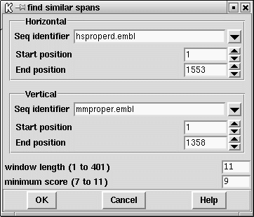

This method was first described by McLachlan Mclachlan,A.D. Tests for comparing related amino acid sequences J. Mol. Biol. 61, 409-424 (1971). It involves calculating a score for each position in the plot by summing points found when looking forwards and backwards along a diagonal line of a given length (window length). The algorithm does not simply look for identity but uses a score matrix that contains scores for every possible pair of character types. At each point that the score is above a minimum score, a match is saved. The matches are plotted as a single point in the SPIN Sequence Comparison Plot, corresponding to the centre of the matching span ( see section SPIN Sequence Comparison Plot) (Although see "Rescan matches, below).

The dialogue box (shown above) requests the horizontal and vertical sequences and their ranges ( see section Selecting a sequence), the window span length and the minimum score. Only results above this minimum score are plotted. The default value for the minimum score is one that would produce approximately 500 matches between two random sequences of the same composition as the two under investigation ( see section Probabilities and expected numbers of matches). This value of 500 can be changed using the "Configure default number of matches" option of the "Options" menu on the main menubar ( see section Changing the default number of matches). The upper and lower limits of the minimum score are similarly determined except that the expected number of matches for the upper limit is 0 and for the lower limit is "maximum number of matches". The "maximum number of matches" value can be altered if more matches are required to be plotted by using the "Configure maximum number of matches" option of the "Options" menu ( see section Changing the maximum number of matches).
Further operations available for find similiar spans are:
horizontal EMBL: hsproperd vertical EMBL: mmproper window length 11 min match 9 number of matches 1772
Positions 2 h 630 v and score 9
Percentage mismatch 18.2
2 12
H agcctatcaac
::::::: : :
V agcctatgagc
630 640
Positions 7 h 369 v and score 9
Percentage mismatch 18.2
7 17
H atcaacccaga
: ::::::::
V aggaacccaga
369 379
score 9 probability 1.73e-04 expected 365 observed 1772 score 10 probability 1.17e-05 expected 25 observed 601 score 11 probability 3.60e-07 expected 1 observed 149